We grew a pretty darn big zucchini in our garden this year. This is pretty much the only thing we actually got from our garden. We weren't able to use our backyard because of the brick that got fucked up by the builders.
good finds @ Mega Media Xchange
July 25, 2024
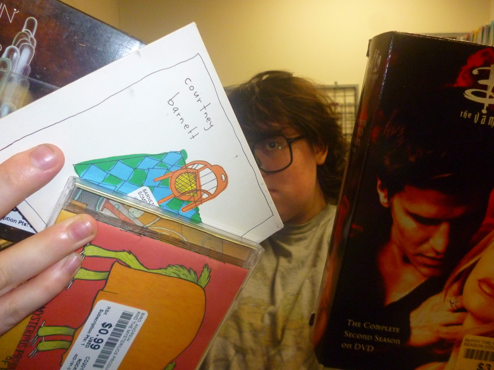
We found some CDs and Buffy the Vampire Slayer at Mega Media Xchange.
grocery shopping with David and Howl
July 25, 2024
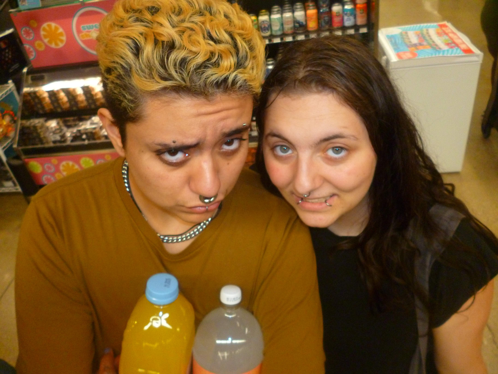
Howl was in town for Badger's birthday and we needed some mixers for the alcohol!!
Ermy Wermy.
July 24, 2024
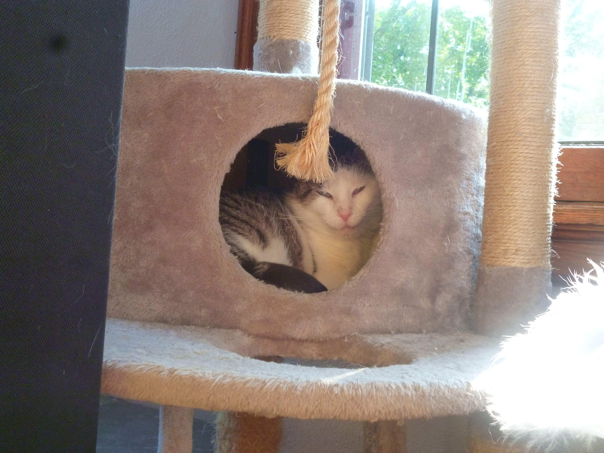
Herman isn't a super big fan of this little den thing on his cat tree, BUT sometimes he does go in there.
David and Herman
August 11, 2024
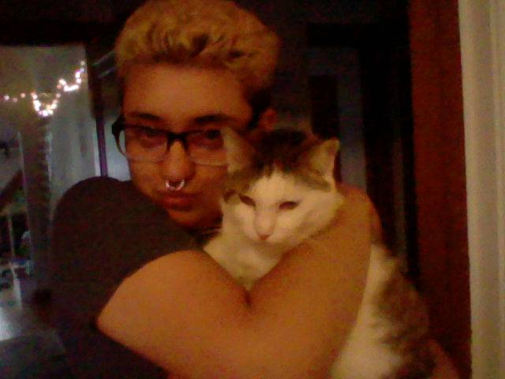
Aren't they both so darn cute!!!! David is better at holding Herman than I am.
herman loves to be pet
June 25, 2024
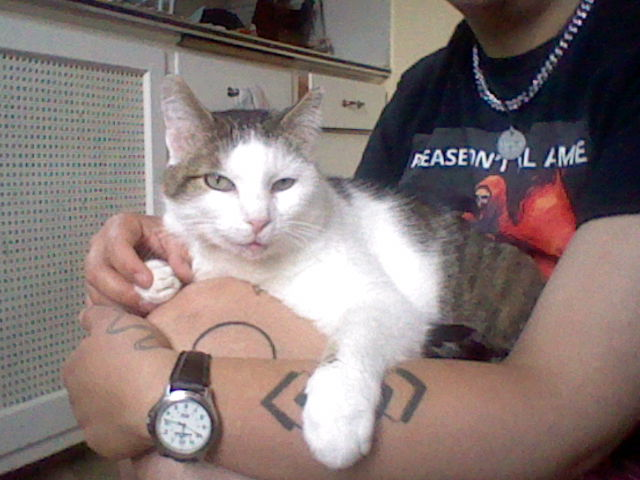
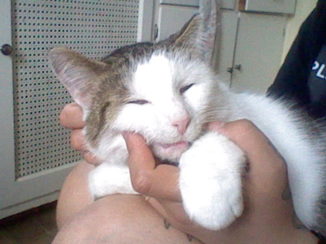
Herman loves to get scritched right on his chin. This is him getting what he loves.
lift bridge??
June 25, 2024
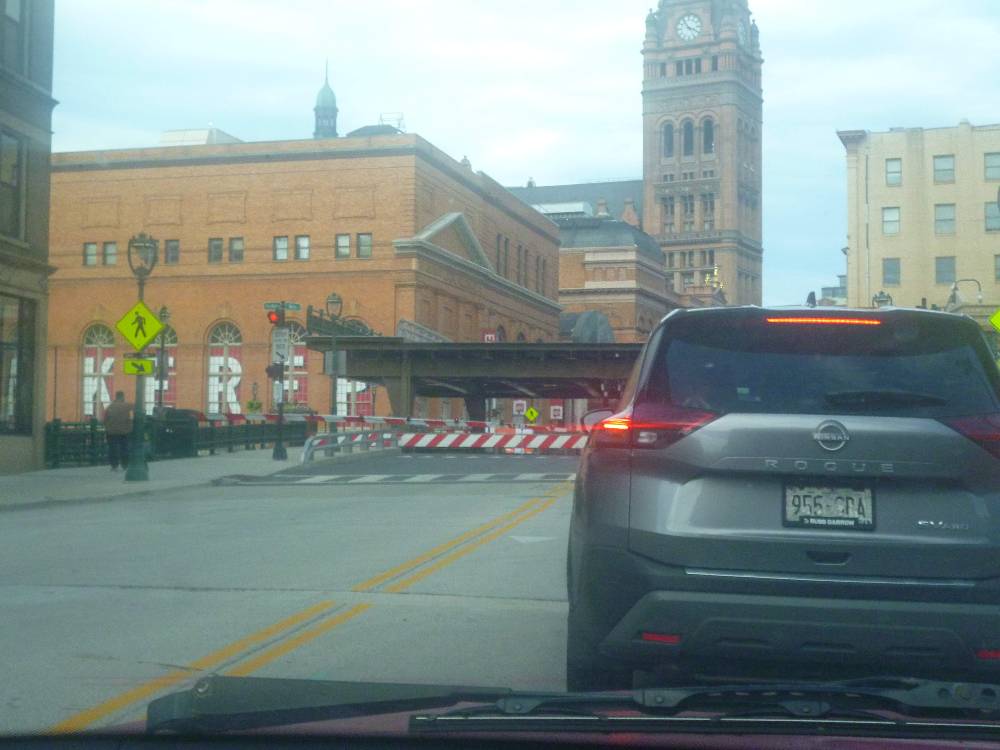
We got to see one of those lift bridges in Milwaukee go up!! It was super cool. Still the only time I've seen one so far...
IT RAINED!!!
June 22, 2024
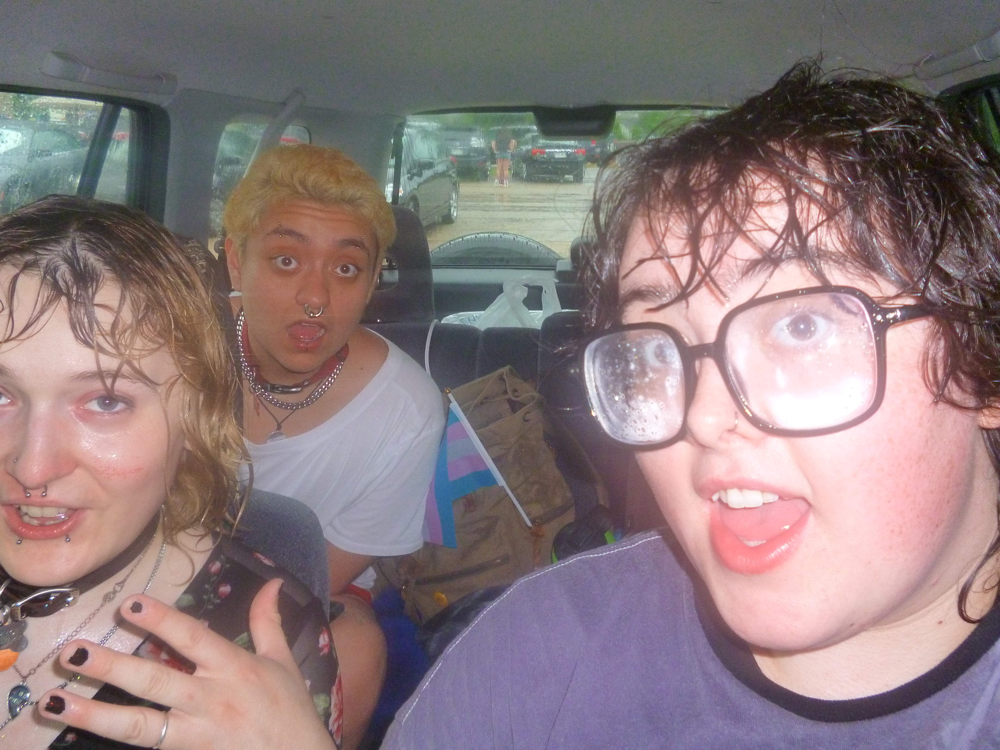
We totally got rained on!! (Not David though...) We also saw some houses that were totally flooded (lots of flooding in the driftless region.)
Badger at pride
June 22, 2024
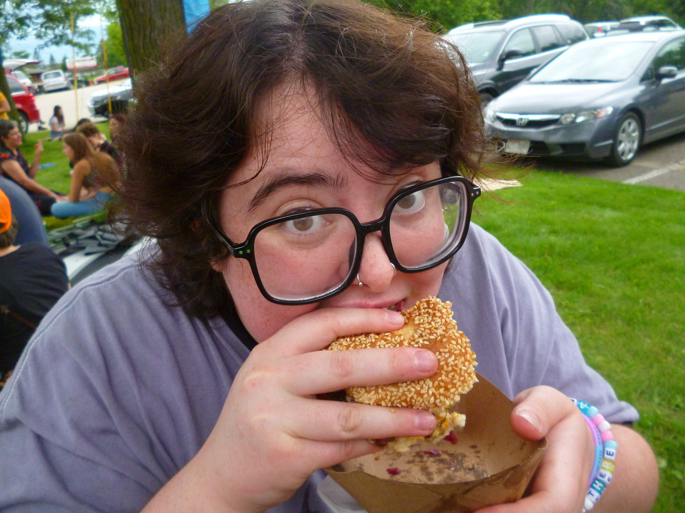
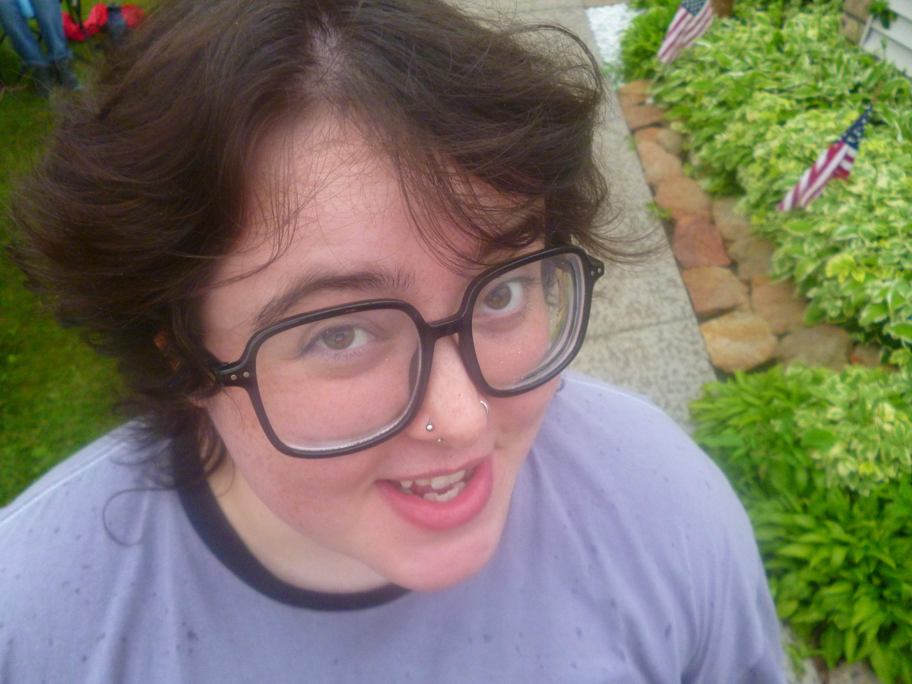
There were super good burgers at pride... someone was selling them.... HRMMMM..... much to think about.
Howl and Sabine
June 22, 2024
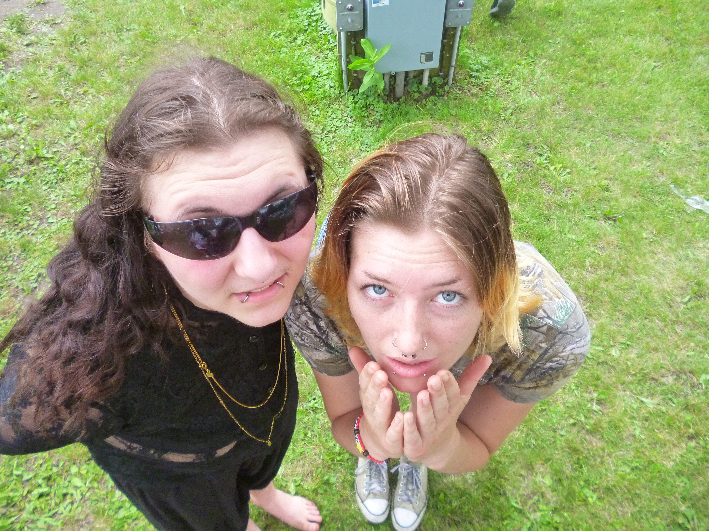
Howl and Sabine at pride!! Always nice to see them!!